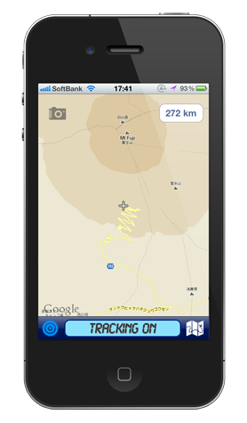

|

Designed for iOS 5
|
Sankou
A simple to use yet powerful GPS trekking recorder.
★★★ FREE FOR LIMITED TIME ONLY ★★★
Features:
- Intelligent battery saving - uses GPS only when moving
- Automatic elevation map generator
- Easy to read Altitude, Low, High, Ascent, Descent display
- Built in compass with bearing readout
- Built in camera and photo viewer
- Automatic photo importing - take photos from any app
- Export to Google Earth (KMZ and KML)
- Export via Email or Dropbox
- Simple to use interface, even with one hand
|